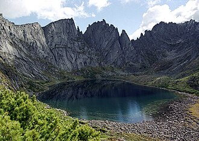

«Азас» — государственный природный заповедник. Расположен в Тоджинском кожууне Республики Тыва. Создан 11 января 1985 года на базе республиканского заказника «Азас». Входит в состав ассоциации заповедников и национальных парков Алтай-Саянского экорегиона.
Территория заповедника (300 390 га в границах 1991 г.) расположена в центральной части Тоджинской котловины на северо-востоке Тувы и вытянута в широтном направлении вдоль р. Азас. Географические координаты её крайних точек: север — 52°42', юг — 52°16', восток — 98°42', запад — 96°30'.
Подробнее»Алтайский заповедник, официальное название Алтайский государственный природный биосферный заповедник — особо охраняемая природная территория в Алтайских горах. Основан в 1932 году, впоследствии упразднялся и воссоздавался вновь. Часть объекта всемирного наследия ЮНЕСКО «Золотые горы Алтая». Входит в состав ассоциации заповедников и национальных парков Алтай-Саянского экорегиона. Климат заповедника континентальный, горный. Зависит от особенностей рельефа. Зима на берегах Телецкого озера — одна из самых мягких в Сибири, что связано с влиянием обычных в это время года восточных и юго-восточных фёнов.
Подробнее»